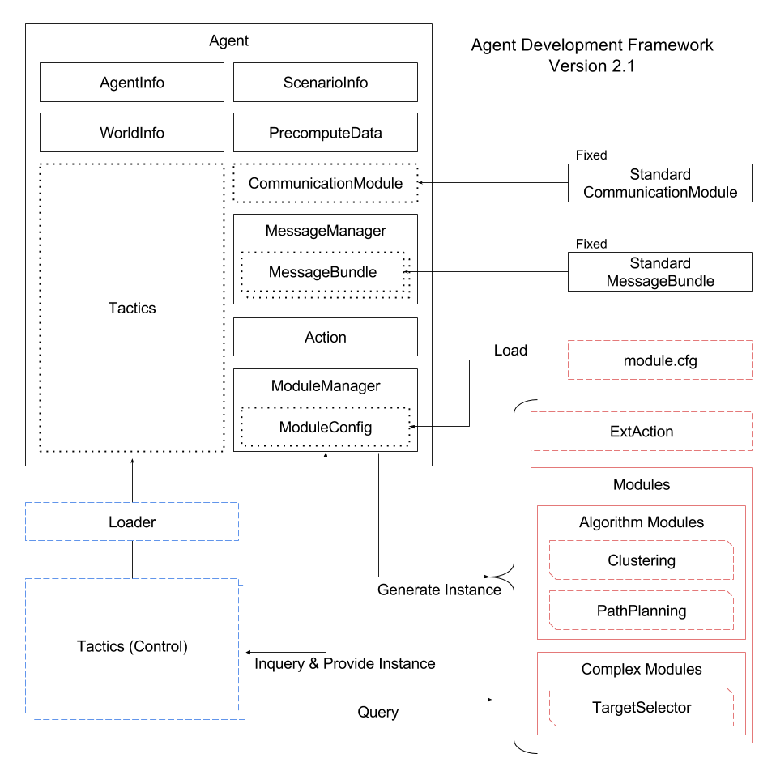

RoboCupRescue Simulation Agent Development Framework (RCRS-ADF)は， モジュール構造を採用したRoboCupRescue Simulationのエージェントを 開発するためのフレームワークです． RoboCupRescue Simulationには，参加する各チームのコード構造が異なり 技術共有が活発におこなえていないという問題がありました． RCRS-ADFは，各研究分野にコードをモジュール化し， コミュニティの内外ともに技術共有をおこないやすい環境を実現します．
シミュレーションサーバの準備とサンプルエージェントの実行をおこないます．
シミュレーションサーバの準備とサンプルエージェントの実行をおこないます．
シミュレーションサーバの準備とサンプルエージェントの実行をおこないます．
Doxygenで生成したドキュメントを参照できます．